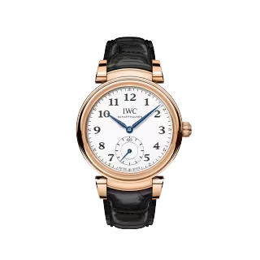

THE DA VINCI WATCHES COLLECTION
- 1969
- -
- 1985
- 1986
- 1988
- 2000
- 2004
- 2007
- 2017-1
- 2017-2
- 2018
-
1969
The first IWC Da Vinci watch was a landmark piece in terms of its movement technology. Equipped with the first Swiss-made quartz movement - which had been jointly developed by several renowned Swiss watch manufacturers - it measured time ten times more accurately than a tested chronometer movement.
Da Vinci Quartz Electronic -
DESIGN HIGHLIGHTS
-
1985
The inventive spirit of Leonardo Da Vinci was the source of inspiration in 1985, when IWC gave this watch family an autonomous perpetual calendar, and by so doing created a timepiece that would become one of the most successful ever made.
Da Vinci Perpetual Calendar -
1986
IWC’s inventive spirit was not limited to watch movements – in 1986, IWC created the first case made of the high-tech ceramic zirconium oxide.
Da Vinci Ceramic Perpetual -
1988
The Da Vinci Lady brought sophisticated technology to women’s wrists. With a semi-mechanical 630-calibre chronograph movement and date and moon phase display, the Da Vinci Lady Chronograph has influenced the development of the Da Vinci family for over 20 years.
Da Vinci Lady Chronograph -
2000
This was a very special version of the Da Vinci Tourbillon that was launched to celebrate the new millennium. The Da Vinci Perpetual Calendar Tourbillon Four Seasons was available in a limited edition of just 20 pieces.
Da Vinci Perpetual Calendar Toubillon Four Seasons -
2004
Two decades after the launch of the Da Vinci Perpetual Calendar Ref. 3750, a new version of the watch was created. The case diameter was increased to 41.5 mm. The watch face was given a more striking appearance with Arabic numerals. It was also equipped with antireflective sapphire glass.
Da Vinci Perpetual Calendar -
2007
With the Da Vinci Chronograph, IWC launched its first in-house chronograph movement: the 89360 calibre. For this watch, IWC returned to the tonneau-shaped case initially featured on the 1969 model. From a technical point of view, the case was highly complicated – the most advanced case IWC had ever built.
Da Vinci Chronograph -
2017-1
In 2017, IWC re-launched the Da Vinci in the iconic round design of the 1980s. With the Da Vinci Automatic Moon Phase 36, the tradition of creating selected references especially for women was re-established in this watch family.
Da Vinci Automatic Moon Phase 36 -
2017-2
With the Da Vinci Tourbillon Retrograde Chronograph, IWC demonstrated mastery in haute horlogerie: the IWC-manufactured 89900 calibre movement for the first time united a chronograph, a tourbillon and a retrograde date display on a single dial.
Da Vinci Tourbillon Rétrograde Chronograph -
2018
As part of the Jubilee Collection to mark its 150 year anniversary, IWC Schaffhausen released the Da Vinci Automatic Edition «150 Years» with small seconds at «6 o'clock». With this timepice, the manufacture calibre 82200 with a 60-hour power reserve makes its debut. This stunning timepiece features a 5N gold case and is limited to just 250 pieces.
 Da Vinci Automatic Edition “150 Years”